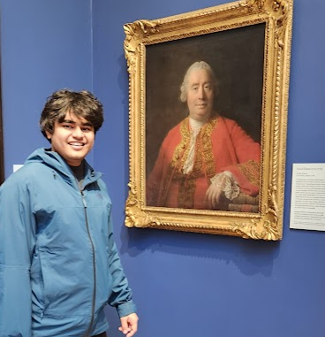

Pranay Venkatesh's Website
Links : Half-Baked Ideas | Resume | GitHub | LinkedIn | Odysee

Some things about me
- I am a PhD student at the University of Colorado, Boulder
- I previously was a researcher at Imperial College, London
- I did my undergrad at BITS Pilani (chemistry + chemE double major)
- Broadly, I am interested in theoretical methods to investigate dynamics in condensed phase systems. Some of the areas that I work in :
- Numerical simulations for Molecular Systems
- Decoherence in Quantum Sensors
- Chemical Physics of Optoelectronic Devices
- Quantum Dynamics Method Development
- Pretty much anything where you can use fun mathematical models and simulations for matter
- I also like to write programs in Julia
- I like anime